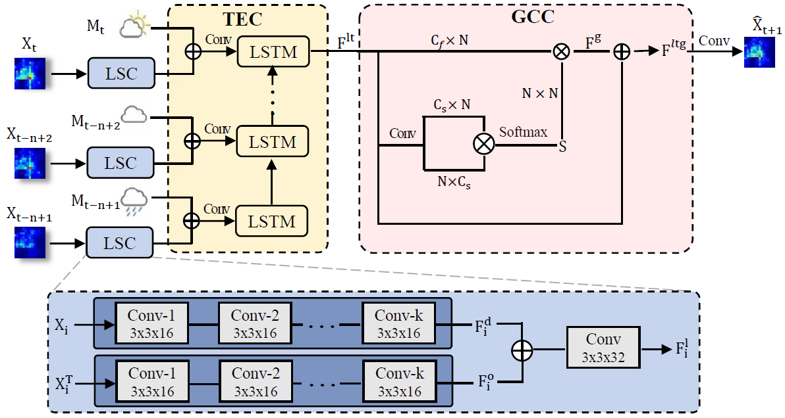

-

Contextualized Spatial-Temporal Network for Taxi Origin-Destination Demand Prediction.
Lingbo Liu, Zhilin Qiu，Guanbin Li, Qing Wang, Wanli Ouyang and Liang Lin.
to appear in Transactions on Intelligent Transportation Systems (TITS), 2019.
[PDF] [ProjectPage]
-

Facial Landmark Machines: A Backbone-Branches Architecture with Progressive Representation Learning.
Lingbo Liu, Guanbin Li, Yuan Xie, Yizhou Yu, Qing Wang, and Liang Lin.
IEEE Transactions on Multimedia (T-MM), 2019.
[PDF] [ProjectPage] [SYSU16K Dataset]
-

Attentive Crowd Flow Machines.
Lingbo Liu, Ruimao Zhang, Jiefeng Peng, Guanbin Li, Bowen Du, Liang Lin.
Proc. of ACM International Conference on Multimedia (ACM MM), 2018.
[PDF]
-

Crowd Counting using Deep Recurrent Spatial-Aware Network.
Lingbo Liu, Hongjun Wang, Guanbin Li, Wanli Ouyang, Liang Lin.
Proc. of International Joint Conference on Artificial Intelligence (IJCAI), 2018.
[PDF]
-

DISC: Deep Image Saliency Computing via Progressive Representation Learning.
Tianshui Chen, Liang Lin, Lingbo Liu, Xiaonan Luo, and Xuelong Li.
IEEE Transactions on Neural Networks and Learning Systems (T-NNLS), 27(6): 1135-1149, 2016.
[PDF] [Code] [ProjectPage]
Selected Publications Google Scholar